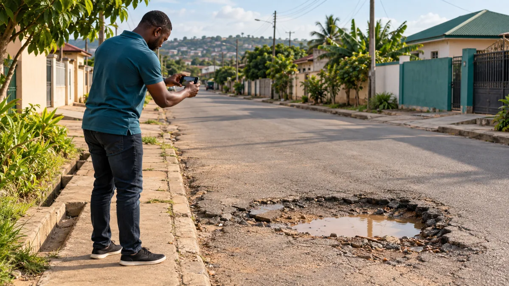
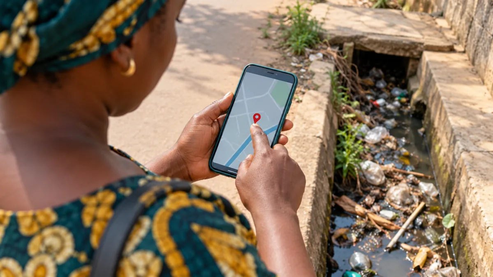
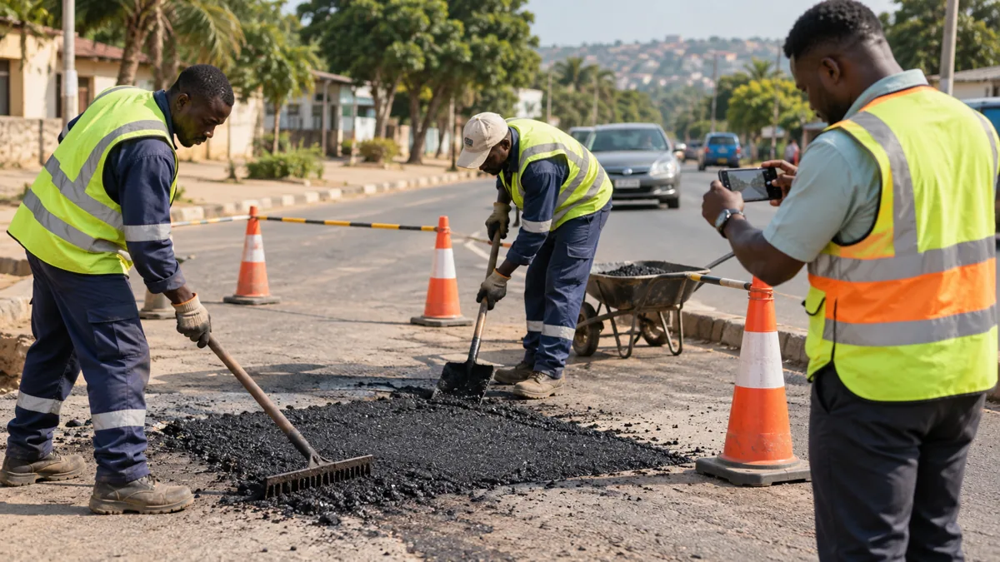

A pothole, broken streetlight or blocked drain can become part of everyday life when there is no clear way to report it and follow what happens next. I built FixMyArea to explore a practical connection between community observations, accountable follow up and visible evidence of action.
The gap between seeing a problem and seeing action
Residents can describe a local problem in a conversation or social media post, but that does not automatically produce a structured report. A useful record needs a category, description, location, supporting evidence and a way to track progress. The receiving team also needs to know what has been assigned, what is being worked on and what evidence supports completion.
FixMyArea brings these elements into one workflow. Its scope covers roads and potholes, drainage, waste and sanitation, streetlights, water, flooding, public facilities, road safety and environmental hazards. It is designed for public issue sites rather than private complaints containing personal information.

From a photo to a traceable report
- Create an account: residents register and sign in before submitting a report.
- Capture the issue: add a photo, category, description and community or landmark. Place a pin on the map or choose to use the current location.
- Check for a similar report: the app suggests recent reports in the same category within 250 metres, helping residents support an existing issue.
- Track progress: each report receives a tracking reference, a public page and a timeline. Residents can review their own reports and in app updates.
- Record action: provisioned organization staff can handle assignment and permitted status changes. Resolution requires an after photo.
The status pathway is Submitted, Under Review, Verified, Assigned, In Progress, Resolved and Closed. A recorded status is a statement made within the platform; independent field verification and outcome evaluation are part of the pilot work still needed.

What the current MVP includes
I developed a responsive React and TypeScript interface with a community map, report submission, individual tracking pages and basic impact summaries. Leaflet and OpenStreetMap support the map experience. A Python FastAPI service handles authentication, report validation, support actions, notifications and organization workflows.
PostgreSQL on Neon stores the pilot records, while Render hosts the frontend and API. Passwords are hashed with Argon2, tokens expire after eight hours and organization permissions are checked on the server. Public registration creates a citizen account. Organization and administrator access require trusted operator provisioning; signing up does not grant administrative privileges.
Uploaded images are validated, resized and compressed. For this pilot, photos are stored in the database. Moving media to suitable object storage is a planned improvement before wider use. The public counts come from stored reports rather than fabricated demonstration statistics.
A live deployment is only the beginning
Building the project also meant resolving problems that appeared when the frontend, API and external database were connected. Database routing and authentication needed attention, and registration required preserving the JSON content header. Clear validation messages were added so people can understand rejected inputs.
These lessons reinforce a practical principle: a working health check is useful, but the meaningful test is whether people can complete the actual workflow repeatedly. Registration, location selection, photo upload, report retrieval and authorized updates all need realistic user testing.
Who could help shape a useful pilot?
District and municipal assemblies, utilities, community organizations, NGOs and corporate social responsibility teams are potential partners. They could help define jurisdiction, response ownership, verification standards and which issues fit a first pilot. These are collaboration opportunities; no institutional adoption or formal partnership is claimed.
A focused pilot could measure how often reports contain usable evidence, how many are duplicates, how quickly a responsible team acknowledges an issue and whether completed work has credible resolution evidence. These are proposed evaluation measures, not results already achieved.

The next stage
Priorities include field verification, rejection and reopening workflows, organization invitations, email verification, moderation, rate limiting, jurisdiction routing and reliable media storage. Accessibility, security review and a controlled community pilot will help determine whether the platform fits real reporting and response practices.
AI classification, offline capture, SMS or WhatsApp notifications and hotspot analysis are future possibilities. The current MVP does not include these features or use an AI prediction model.
Help turn feedback into the next iteration
I welcome feedback from residents, local government practitioners, engineers, GIS specialists, civic organizations and implementation partners. The most useful contribution is a real workflow question: who receives the report, who verifies it, who takes action and how should the community know?
Related: MineGuard Ghana · HealthSignal
← Back to all insights